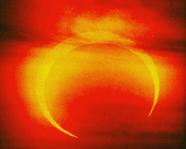

The July 1 partial solar eclipse will be visible only from southernmost South America. However, the total lunar eclipse of July 16 and the partial solar eclipse of July 30 are a different story. Both will be at least partly visible in some areas of the U.S., and the lunar eclipse has the special attraction of being the longest lasting for the next 1,000 years or more!
Let's consider the lunar eclipse first. Unfortunately, it takes place a little too late for any of the lower 48 states or Canada to see the total phase. The eclipse occurs late in the night of July 15 - so late that, if you live in the eastern half of the U.S., the moon will set before you've had a chance to glimpse even the first trace of the Earth's shadow on the upper left edge of the lunar surface. The farther west you are, the better. Sky gazers on the Pacific Coast should see the part of the moon outside Earth's umbra (inner shadow) reduced to a reddish sliver as it sets in bright dawn. And the view from Hawaii is better still: There, the 107 minute-long total eclipse ends just before moonset. The best place in the world to see this lunar eclipse? Australia.
The partial eclipse of the sun on July 30 is another event visible only briefly, at sunset, and only from part of the western U.S. Draw a line on a map from San Luis Obispo, California, to Salt Lake City, Utah, to Minot, North Dakota. The eclipse will not be visible to the east and south of this line (in fact, my sky simulation software suggests that Minot just misses the eclipse). But to the west and north of the line, a truly dramatic sight might be viewed: a big red sun sitting on the horizon with a "bite" (edge of the moon) taken out of its lower left side.
But wait: Is it safe to look directly at this spectacular solar event? Not necessarily. While the sun at the horizon is typically dimmed enough by the long pathway of air it shines through to be viewed safely with the naked eye, looking even a minute too soon could be dangerous. Also, even when on the horizon, the sun is too bright to risk viewing with binoculars or a telescope; the result could be blindness, possibly permanent.
What should you do? Your best bet is to seek out your nearest amateur astronomy club (check the directory of clubs at www.skypub.com ). These folks can help you set up a "solar projection" (a set of techniques for safely projecting an image of the sun), or else they may have a telescope that is adequately shielded with a full-aperture filter. You may also be able to obtain glasses with aluminized Mylar lenses, which will make viewing safe - provided you don't try to use them with binoculars or your home telescope.
You can also contact a local welding supply company and, for just a few dollars, buy a small piece of shade #14 welder's glass to look through (again using only your eyes, no other optical instruments). Do not use welder's glass with a shade number lower than 14.
With some common sense, viewers can safely marvel at the solar eclipse of July 30. Observers in Seattle will see the moon extend as much as 31% of the way across the face of the setting sun.
|
 Westerners will witness a solar eclipse on July 30. |
|
|